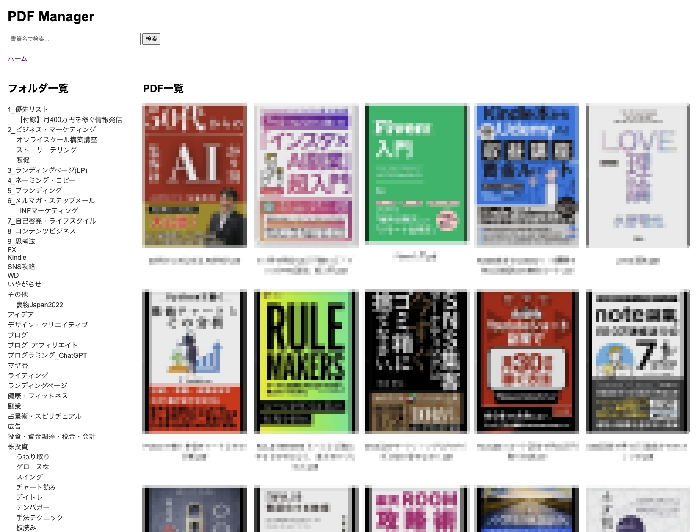

プロジェクト概要：
PDFファイルのアップロード、管理、検索機能を備えたシステム。OCR連携によるテキスト抽出機能を実装しました。
主な機能：
技術スタック：
開発の特徴：
Laravelをバックエンド、PythonをOCR処理用に使用するハイブリッドアーキテクチャを採用。
PDF処理は非同期ジョブとして実装し、大量のPDFファイルも効率的に処理可能です。
担当範囲：
要件定義から設計、開発、テスト、デプロイまで一貫して担当。
特にOCR連携部分と検索エンジン（Elasticsearch）の実装に注力しました。
プロジェクト期間：
2023年11月〜2024年3月（5ヶ月）
成果：
導入後、PDF管理作業の効率が80%向上。1日あたりの処理時間が4時間から45分に短縮されました。